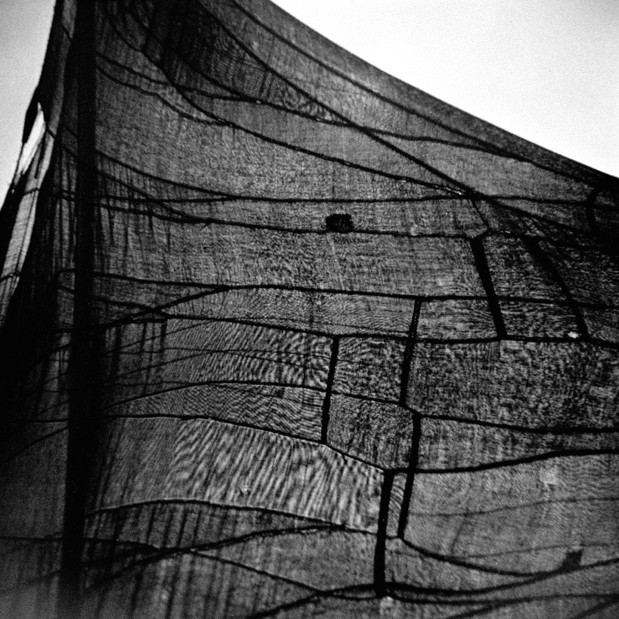

| B06XS73Y8H EBOK | |
| Unknown | |
ShINC.ARCHIVES/01
Kiyoshi NIIYAMA with Start 35
ca.1950 - ca.1956
Curated by Akira GOMI
Copyrights All Reserved 2017 by ShINC.PUBLISHING
ShINC.ARCHIVES/
Kiyoshi NIIYAMA with Start 35
ca.1950 - ca.1956
Curated by Akira GOMI
Matsukawa , Ehime ca. 1950
P-01
P-02
Matsukawa , Ehime ca. 1950
P-03
P-04
Matsukawa , Ehime ca. 1950
P-05
P-06
Matsukawa , Ehime ca. 1950
P-07
P-08
Matsukawa , Ehime ca. 1950
P-09
P-10
Matsukawa , Ehime ca. 1950
P-11
P-12
Matsukawa , Ehime ca. 1950
P-13
P-14
Matsukawa , Ehime ca. 1950
P-15
P-16
P 01~ P17 / Matsukawa , Ehime ca. 1950
By Start 35 Model Ⅰ
P-17
P 01~ P17 / Tokyo ca. 1951 ~ ca. 1956
By Start 35 Model Ⅱ
Haneda Airport , Tokyo ca. 1951 ~ ca. 1956
P-18
Haneda Airport , Tokyo ca. 1951 ~ ca. 1956
P-19
P-20
Haneda Airport , Tokyo ca. 1951 ~ ca. 1956
P-21
P-22

Tokyo ca. 1951 ~ ca. 1956
P-23
P-24
Tokyo ca. 1951 ~ ca. 1956
P-25
P-26

Tokyo ca. 1951 ~ ca. 1956
P-27
P-28
Meguro , Tokyo ca. 1951 ~ ca. 1956
P-29
P-30
Meguro , Tokyo ca. 1951 ~ ca. 1956
P-31
P-32
Meguro , Tokyo ca. 1951 ~ ca. 1956
P-33
P-34

Tokyo ca. 1951 ~ ca. 1956
P-35
P-36
Tokyo ca. 1951 ~ ca. 1956
P-37
P-38
Tokyo ca. 1951 ~ ca. 1956
P-39
P-40
Tokyo ca. 1951 ~ ca. 1956
P-41
P-42
Tokyo ca. 1951 ~ ca. 1956
P-43
P-44
Tokyo ca. 1951 ~ ca. 1956
P-45
P-46
Tokyo ca. 1951 ~ ca. 1956
P-47
P-48
Tokyo ca. 1951 ~ ca. 1956
P-49
P-50
Tokyo ca. 1951 ~ ca. 1956
P-51
P-52

Tokyo ca. 1951 ~ ca. 1956
P-53
P-54
Tokyo ca. 1951 ~ ca. 1956
P-55
P-56
Tokyo ca. 1951 ~ ca. 1956
P-57
P-58
Tokyo ca. 1951 ~ ca. 1956
P-59
P-60
Tokyo ca. 1951 ~ ca. 1956
P-61
P-62
Tokyo ca. 1951 ~ ca. 1956
P-63
P-64
Tokyo ca. 1951 ~ ca. 1956
P-65
P-66
Shibuya , Tokyo ca. 1951 ~ ca. 1956
P-67
P-68
Shibuya , Tokyo ca. 1951 ~ ca. 1956
Toshimaen , Tokyo ca. 1956
P-69
P-70
Toshimaen , Tokyo ca. 1956
P-71
写真展
1964(昭和 39)年年 8 ⽉月 「変貌」(⽉月光ギャラリー)
1969(昭和 44)年年 9 ⽉月 遺作展「⽊木⽯石の詩」(ペンタックスギャラリー) 2004年年 ~∼ 2015年年 ギャラリー COSMOS 及び Ni yama's Gal eryにて21回開催
2006(平成 18)年年 9 ⽉月 「変貌」(ベルリン Monochrome Gal ery) 新⼭山 清
2008(平成 20)年年 1 ⽉月 プリンターズ展「新⼭山清の世界」(横浜⾚赤レンガ倉庫) 略略歴
2008(平成 20)年年 1 ⽉月 「Otto Steinert & Kiyoshi Ni yama」(ベルリン Kicken Gal ery) 2009(平成 21)年年 3 ⽉月 「パーレット時代」(横浜みなと町ギャラリー) 1911(明治 44)年年 8 ⽉月 愛媛県に⽣生まれる。
2009(平成 21)年年 10 ⽉月 「The Pearlette Age」(ニューヨーク Gal ery Cantelmo)
・東京電気専⾨門学校卒業。
2010(平成 22)年年 3 ⽉月 「ソルントン時代 I」(横浜みなと町ギャラリー) 1935(昭和 10)年年 4 ⽉月 理理化学研究所⼊入社。
2011(平成 23)年年 5 ⽉月 ビンテージ写真展「樹・⽊木・⽊木と造形」(横浜みなと町ギャラリー) 1936(昭和 11)年年 1 ⽉月 パーレット 6.3 付きで写真を始める。
2011(平成 23)年年 9 ⽉月 新⼭山清⽣生誕100年年記念念 新⼭山清の世界(東川町⽂文化ギャラリー) パーレット同⼈人会に所属する。
2011(平成 23)年年 9 ⽉月 新⼭山清⽣生誕100年年記念念 新⼭山清の世界(横浜⾚赤レンガ倉庫)
・パーレット同⼈人会展特選。
2012(平成 24)年年 5 ⽉月 ビンテージ写真展「変貌」(横浜みなと町ギャラリー)
・写真雑誌に数⼗十回⼊入選。
2013(平成 25)年年 10 ⽉月 新⼭山清写真展「懐かしのスタートカメラ作品展」 (横浜みなと町ギャラリー)
・⼤大⽇日本サロン、アシヤサロン、国画展、国際写真サロン⼊入選。
2014(平成 26)年年 11 ⽉月 FOTO FEVER PARIS(ルーブル美術館内 グループ展)
・準特選、研展銅賞2回・⼊入選数回。
2016(平成 28)年年 4 ⽉月 新⼭山清サブジェクト・フォトグラフィー(スタジオ35分)
・東京美術協会展最⾼高賞、全関⻄西サロン特選4回。
2016(平成 28)年年 5 ⽉月 ビジュアル世界の冒険パート1(ブリッツギャラリー)
・アメリカ・ポピュラーフォトコンテスト⼊入選。
2016(平成 28)年年 6 ⽉月 同上 パート2
・ロンドン、パリサロン数点⼊入選。
2016(平成 28)年年 7 ⽉月 ⼼心に響くモノクローム 時代を超越して愛される写真(4⼈人展)
・⼆二科展4回⼊入選、個展1回。
(リコーイメジングスクエア銀座)
1958(昭和 33)年年 4 ⽉月 旭光学商事株式会社に⼊入社。
2016(平成 28)年年 8⽉月 Kiyoshi Ni yamaʼ's World of Photography「Vintage」(渋⾕谷画廊)
・東京サービスセンター所⻑⾧長・宣伝部⻑⾧長。
2017(平成 29)年年 1⽉月 戦後の増上寺 新⼭山清が撮影した旧徳川将軍家霊廟1955~∼1961
・ワールドコンテスト事務局⻑⾧長歴任。
・全⽇日本写真連盟役員。
写真集
・東京写真研究会審査員などとして 全国アマチュアの指導に活躍。
1970(昭和 45)年年 5 ⽉月 遺作集『⽊木⽯石の詩』
1969(昭和 44)年年 5 ⽉月 逝去。
2008(平成 20)年年 11 ⽉月 「新⼭山清の世界」パーレット時代 1937 ~∼ 1952
2010(平成 22)年年 11 ⽉月 「新⼭山清の世界」ソルントン時代1947~∼1969

Start 35⽤用フィルターとボルタ版フィルム
24 X 24mm で12カット / 24 X 36mmで10カット
ASA(ISO) 100 / 60円（1965頃）

Kiyoshi NIIYAMA with Start 35
ca.1950 - ca.1956
『Start 35』、通称『スタートカメラ』は⼦子供向けの写真⼊入
⾨門機として1950年年に⼀一光社から発売された。新⼭山清がスター
トカメラを⼊入⼿手した経緯について定かでないが新⼭山清の使⽤用し
た『Start 35 ModelⅡ』は1950年年に発売された『Ⅰ型』の絞
りがF12〜～16の調節式であったものをF8/F11/F16の三段階の
選択式に改良良しものでシャッター速度度はBと1/30秒、レンズ１
枚１群の42mm。
このカメラを使⽤用して撮影した写真は表紙と巻頭の四国、愛
媛県で⾏行行われた撮影会の写真だけであり、その他の写真は翌年年
に発売された『Start 35 ModelⅡ』が使⽤用されている。
その改良良点はフィルムの装填⽅方法で『Ⅰ型』はファインダー
脇にある2つのネジを緩めて上蓋を外しフィルムを装填する。
撮影範囲の枠とフィルムを固定する圧⼒力力板がないためフィルム
のカーリングを抑える事ができず画像が湾曲してしまう。
『Ⅱ型』はカメラの底『OPEN・CLOSE』のノブが付けられ
上蓋を外すように改良良されそこに圧⼒力力板に近い働きをする枠が
付けられフィルムの平⾯面性が保たれるようになったため画像の
湾曲が抑えられた。1956年年には24X36mmサイズの『Start
35K』が発売されるが新⼭山がそれを使って撮影したネガはなく
『Start 35』で撮影された愛媛県の撮影会の写真を除く写真は
全て『Start 35 ModelⅡ』で撮影されたもと思われる。

Start 35 1950年年~∼
Start 35 Ⅱ型 1951年年~∼
Start 35 K型 1956年年~∼
ファインダーの両脇にある2つのネジを緩めて上蓋を外す。
カメラ底にOPEN・CLOSEのノブが付けられたⅡ型
画⾯面サイズが24mm X 36mmに改良良されたK型
Start 35は1950年年に⼀一光社から発売された⽇日本初のトイカメラ。フィルム交換はフィルムのリード部分が短いため暗室でしなければならなかった。


ShINC/ AKIRA GOMI Europe 1973
ShINC/ 仙葉葉由季 x 五味彬 『 SEMBA 』
ShINC.Kindle On Amazon
五味彬20歳の時にヨーロッパ各地を旅⾏行行した時の作品集
1990年年に出版した写真集『 SEMBA 』のリメーク版
ShINC.
🔍
ShINC.MAGAZINE-‐-‒D/01
Return To " Subjective Photography "
⼤大塚和也
五味彬
新⼭山清
横⽊木安良良夫
⽴立立⽊木義浩

ShINC.
MAGAZINE-D/01 ShINC.PUBLISHING / Alao YOKOGI & Akira GOMICopyrights All Reserved 2017 by ShINC.PUBLISHING